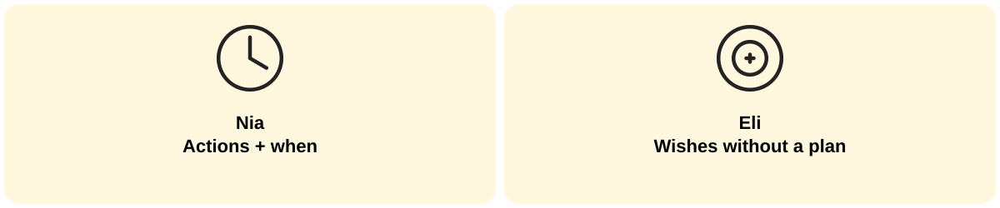

Week 10 · Tuesday October 6 · Welcome · 0:00
A break is a pause, not a stop. The plan is what you do with the pause.
Week 10 · Tuesday October 6 · Regulate · 2:00
Shoulders
jaw
hands
breath
Notice one. Release it.
Week 10 · Tuesday October 6 · Orient · 2:00
SAFE
RESPECTFUL
RESPONSIBLE
Rest: sleep and recharge on purpose.
Safe: use your tools and your judgment when nobody is checking.
Respectful: the values don't stay at school.
Responsible: keep your brain warm and show up for the people at home.
Week 10 · Tuesday October 6 · Connect · Look · 2:00

Nia: "I'll read more."
Eli: "I'll read 15 minutes before bed, after my brother's asleep."
Nia: "I'll be nice to my sister."
Eli: "When my sister takes my charger, I'll ask for it back instead of yelling."
Question: What makes Eli's lines a plan and Nia's lines a wish?
Week 10 · Tuesday October 6 · Connect · Share · 1:00
Week 10 · Tuesday October 6 · Practice · 3:00
REST: ____ (when)
SAFE: ____ (when or where)
RESPECTFUL: ____ (with whom)
RESPONSIBLE: ____ (when)
If my plan gets interrupted, I will ____.
Breaks look different for every family. Plans and reflections stay private unless the student chooses to share.
Week 10 · Tuesday October 6 · Commit · 3:00
Plans work when you practice them before you need them. Today I will practice ____ by ____.
Week 10 · Tuesday October 6 · Transition · 2:00
Before we move on: Which part of your plan matters most to you, and why?
1. Keep your commitment. 2. Practice your plan. 3. Begin the next task.